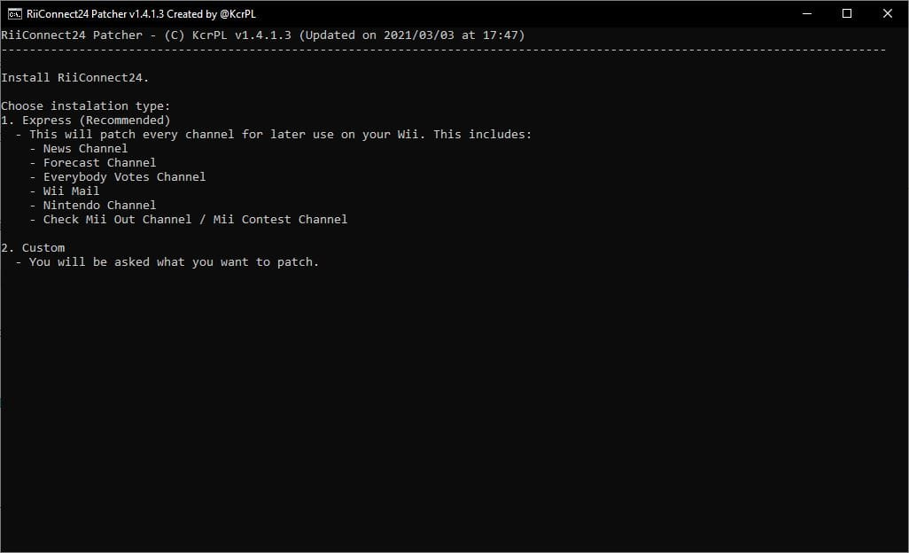

RiiConnec24 na vWii
Jeżeli potrzebujesz pomocy z czymkolwiek dotyczącym tego poradnika, dołącz do serwera RiiConnect24 na Discordzie (wsparcie dostępne po Polsku!) lub napisz do nas na [email protected].

Guide to installing RiiConnect24 on vWii (Virtual Wii on Wii U).
Since certain features found in the original Wii are not present in the vWii, we can only partially utilize RiiConnect24. See what’s currently working for details. {: .notice–warning}RiiConnect24 allows you to use discontinued services from WiiConnect24, which include the News, Forecast, Everybody Votes, Nintendo and Check Mii Out Channel, along with Wii Mail.
This guide is for vWii (Wii Mode on Wii U) only.
- Follow this tutorial if you’d like to install RiiConnect24 on a Wii.
- Follow this tutorial if you’d like to install RiiConnect24 on Dolphin Emulator.
DO NOT INSTALL RIICONNECT24 ON A WII MINI! It will not work and it will brick the system.
Ostrzeżenia
NIE odpowiadamy za zbrickowanie lub uszkodzenie Twojej konsoli w żaden sposób. Jeżeli dokładnie będziesz podążał za tym poradnikiem, nic złego się nie stanie.
Do NOT perform this guide on any other console than the vWii (Virtual Wii on Wii U). If you’re looking for instructions for a Nintendo Wii, use this guide. If you’d like to perform this guide on the Dolphin emulator, use this guide instead.
Będziesz potrzebował:
- Karta SD lub urządzenie USB.
- Komputer
- A Wii U console with an Internet connection that’s capable of launching the Homebrew Launcher (either via the web browser exploit, Haxchi or Coldboot Haxchi). If you do not have a softmodded Wii U console, please follow wiiuguide.xyz, as well as the virtual Wii modding guide and then come back.
- A Nintendo Network ID (NNID) linked to your Wii U
- Patcher RiiConnect24 (Windows, MacOS i Linux)
After following the above linked guide, you should have:
- A vWii NAND backup and keys (keep these stored safely!!)
- The Homebrew Channel installed
- d2x cIOS installed (IOS249, IOS250 and IOS251)
- IOS80 patched
Instrukcje
Sekcja I - Uruchamianie patcher’a
Jeśli nie możesz uruchomić Patchera RiiConnect24, dołącz do serwera RiiConnect24 na Discordzie (zalecane) albo skontaktuj się do [email protected] dla pomocy.
- Kliknij na link powyżej, aby przejść do strony GitHub gdzie znajduje się patcher.
- Pobierz
RiiConnect24Patcher.bat, jeśli korzystasz z systemu Windows, iRiiConnect24Patcher.shjeśli korzystasz z systemu Unix - Uruchom na Windows’ie
RiiConnect24Patcher.bat. Na systemach Unix, otwórz Terminal, i napiszbash< potem przeciągnijRiiConnect24Patcher.shdo terminalu i kliknij enter. Powinno to wyglądać tak:bash RiiConnect24Patcher.sh. - Naciśnij 1 aby wybrać “
Start” oraz potwierdź swój wybór naciskającENTER. (NOTKA: Te zrzuty ekranu są z Patchera na Windows.)
- Wybierz urządzenie, jakie będziesz patchował.

- Dla tego poradnika, wybierz “
Zainstaluj RiiConnect24 na twoim Wii”
- Wybierz “
Ustawienia ekspresowe (Zalecane)”. Patcher Ci da wszystko co potrzebujesz.  - Wybierz swój region.

- Skoro już tu jesteś, Patcher RiiConnect24 może dodatkowo zainstalować inne opcjonalne kanały które nie używają RiiConnect24.
[X]reprezentuje opcje które są zaznaczone. Po prostu kliknij 5 iENTER, jeśli nie jesteś zainteresowany.
- Podłącz twą kartę pamięci albo dysk USB do swojego komputera i wybierz “
1”.
- Jeżeli Twoje urządzenie zostało pomyślnie wykryte, wybierz “
1”. Jeśli nie, upewnij się, że istnieje folder o nazwieappsna twojej karcie pamięci lub dysku USB, i spróbuj ponownie.
- Bądź cierpliwy…

- Po zakończeniu, będziemy wdzięczni jeśli wyślesz nam anonimową opinie. Jeśli nie chcesz, wyjdź z patchera. Wszystkie pliki powinny być na karcie pamięci.


- Jeśli patcher nie skopiował wszystkiego automatycznie do twojej karty pamięci lub dysku USB, skopiuj foldery
WADiappsobokRiiConnect24Patcher.batdo karty pamięci lub dysku USB.
Sekcja II - Instalacja WAD’ów
Teraz będziesz instalował zpatchowanego IOS’a i kanały WAD które są potrzebne do korzystania z RiiConnect24.
- Put your SD card or USB drive in your Wii U.
- Launch the Homebrew Channel on your Wii U.
- Po ukońzconej pomyślnie instalacji, naciśnij przycisk HOME aby wyjść do Homebrew Channel.
- Używając Twojego kontrolera, przejdź do
WAD Manageroraz wejdź do folderuwad. - Zaznacz wszystkie WAD’y w folderze, naciskając przycisk +, by je zaznaczyć. Kiedy wszystkie WAD’y są wybrane, kliknij A podwójnie by zainstalować WAD’y.
- Jeśli otrzymasz błąd mówiący, że jest zainstalowany ten sam kanał z wyższym numerem wersji (błąd -1035), wróć do menu wybrania WAD’ów, kliknij przycisk -, na zaznaczonym WAD’zie żeby go odinstalować, potem spróbuj zainstalować znowu.
- Po ukońzconej pomyślnie instalacji, naciśnij przycisk HOME aby wyjść do Homebrew Channel.
Sekcja III - Patchowanie 43db dla 16:9 (opcjonalnie)
- Launch ww-43db-patcher and wait for it to complete.
If you install a theme, you will have to run the ww-43db-patcher once more.
Sekcja IV - Korzystanie z RiiConnect24
After following the above sections, you’re almost ready to utilize RiiConnect24 on your Wii U. You just need to perform the following steps every time you boot into vWii.
- On the Wii Menu, launch the ConnectMii channel.
- This will enable the WiiConnect24 and Standby Connection flags required by the WiiConnect24 Channels.
- Launch the WiiConnect24 Channels.
- You should now be able to utilize all of the WiiConnect24 Channels you have installed.
Co obecnie działa?
The following RiiConnect24 services are working on the vWii:
- Forecast Channel
- News Channel
- Everybody Votes Channel
- Nintendo Channel
- Check Mii Out Channel / Mii Contest Channel
The following RiiConnect24 services are not working on the vWii:
- Wii Mail (most functionality does not exist on vWii)
- This includes sending/receiving mail to/from friends.
Most services that utilize WiiConnect24 will be able to work if you leave vWii running for several hours. There’s no standby mode on the console.